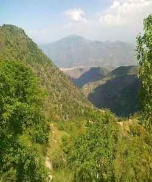
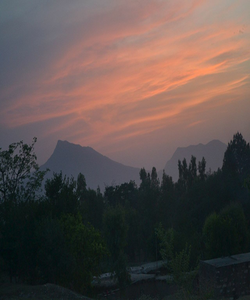

Mahaban is a famous mountain, which according to Dr. Stein has been mentioned in the Alexander campaign. It is about 7000 feet above the Sea Level. On the top of the ridge that stretches towards the Indus, known as SHAH KOT, old ruins of a fortress are still present at places. It is partly located in District Buner and the greater portion is in District Swabi. From here it extends into Harripur District.
It is a potential hill resort for the people of the area due to its close proximity to Tarbela Dam, Topi, Gadoon Industrial Estate and Mardan but it is utterly lacking in all infrastructures.

The ruins on the top of a mountain still attract visitors. As a part of the origin of the Buddhist Gandhara civilisation, it has also garnered re-construction funds from Japanese research institutes. With the help of this money, the local non-governmental organization Shewa Educated Social Workers Association built a walkway to the historical sites, as well as fences to protect the area. It also built a rest house on Baga Mountain. This area attracts many tourists, including Japanese who come here to learn about Buddhism in ancient times.Aurel Stein recorded in his survey of the Mahaban range "it remains for me to explain the opinion to which I have been led as regards the character and identity of this remarkable site. The nature of the ruins described and the remains they have furnished, makes it clear beyond all doubt; that they mark the position of a Buddhist sanctuary possessed of shrines and monastic establishments.
